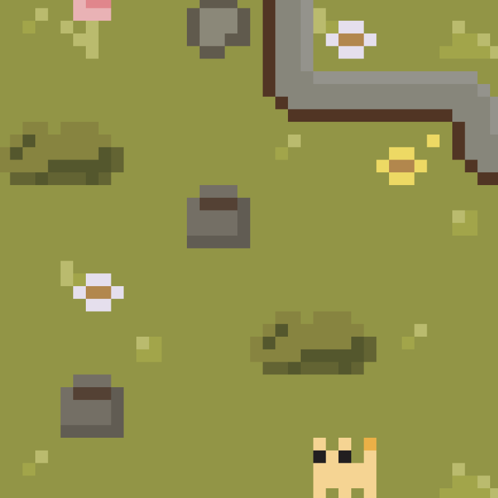

You Are Not Alone

You Are Not Alone is a fun yet deceptively difficult puzzle game created in puzzlescript. Play as a cute cat and collect as many flowers as you can while helping your ghostly friends find their final resting place.
The Breakup Jukebox is an ongoing project that explores the idea of a breakup songs and what they actually mean. This jukebox style interface is created to pull songs from Spotify and play them on this seamless web browser, created using industry standard technology like React and Node. Scroll around and listen in on what other people have determined are their breakup songs.
Judging a Book by its Title is a data story surrounding the tropes and patterns found in Science Fiction and Fantasy book titles. The story explores what makes a perfect title and how authors have found the structures that are most likely to get a reader engaged.
The Roots of Whisperwood is a unique text-based mystery game created in Twine. The interesting narrative challenges the player to uncover the secrets of a mysterious device as they explore their childhood mansion, unlocking secrets and exploring branching paths as they go.